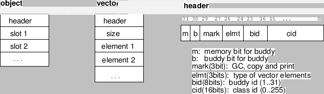

Subsections
Although and, or and cond are advised to be macros by Common Lisp,
they are implemented as special forms in EusLisp to improve
the interpreting performance.
and {form}* [special]
-
-
Forms are evaluated from left to right until NIL appears.
If all forms are evaluated to non-NIL, the last value is returned.
or {form}* [special]
-
-
Forms are evaluated from left to right until non-NIL appears,
and the value is returned. If all forms are evaluated to NIL,
NIL is returned.
if test then [else] [special]
-
-
if can only have single then and else forms.
To allow multiple then or else forms,
they must be grouped by progn.
when test forms [macro]
-
-
Unlike if,
when and unless allow you to write multiple forms
which are executed when test holds (when) or
does not unless.
On the other hand, these macros
cannot have the else forms.
unless test forms [macro]
-
-
is equivalent to (when (not test) . forms).
cond (test {form}*)* [special]
-
-
Arbitrary number of cond-clauses can follow cond.
In each clause, the first form, that is test, is evaluated.
If it is non-nil, the rest of the forms in that clause are evaluated sequentially,
and the last value is returned.
If no forms are given after the test, the value of the test is returned.
When the test fails, next clause is tried until a test which is evaluated
to non-nil is found or all clauses are exhausted.
In the latter case, cond returns NIL.
case key {({label  ({lab}*) {form}*)}* [macro]
-
-
For the clause whose label matches with key,
forms are evaluated and the last value is returned.
Equality between key and label is tested with eq
or memq, not with equal.
prog1 form1 &rest forms [function]
-
-
form1 and forms are evaluated sequentially,
and the value returned by form1 is returned as the value of prog1.
progn {form}* [special]
-
-
Forms are evaluated sequentially, and the value of the rightmost form
is returned.
Progn is a special form because it has a special meaning when it
appeared at top level in a file.
When such a form is compiled, all inner forms are regarded as they appear
at top level.
This is useful for a macro which expands to a series of
defuns or defmethods, which must appear at top level.
setf {access-form value}* [macro]
-
-
assigns value to a generalized-variable access-form.
let ({var (var [value])}*) {declare}* {form}* [special]
-
-
introduces local variables.
All values are evaluated and assigned to vars in parallel, i.e.,
(let ((a 1)) (let ((a (1+ a)) (b a)) (list a b))) produces
(2 1).
let* ({var (var [value])}*) {declare}* {form}* [special]
-
-
introduces local variables.
All values are evaluated sequentially, and assigned to vars
i.e.,
(let ((a 1)) (let* ((a (1+ a)) (b a)) (list a b))) produces
(2 2).
flet ({(fname lambda-list . body)}*) {form}* [special]
-
-
defines local functions.
labels ({(fname lambda-list . body)}*) {form}* [special]
-
-
defines locally scoped functions.
The difference between flet and labels is,
the local functions defined by flet cannot reference
each other or recursively, whereas labels allows such mutual references.
block tag {form}* [special]
-
-
makes a lexical block from which you can exit by return-from.
Tag is lexically scoped and is not evaluated.
return-from tag value [special]
-
-
exits the block labeled by tag.
return-from can be used to exit from a function or a method which
automatically establishes block labeled by its function or method name
surrounding the entire body.
return value [macro]
-
-
(return x) is equivalent to (return-from nil x). This is
convenient to use in conjunction with loop, while, do, dolist,
and dotimes which implicitly establish blocks labeled NIL.
catch tag {form}* [special]
-
-
establishes a dynamic block from which you can exit and return a value
by throw. Tag is evaluated.
The list of all visible catch tags can be obtained by sys:list-all-catchers.
throw tag value [special]
-
-
exits and returns value from a catch block.
tag and value are evaluated.
unwind-protect protected-form {cleanup-form}* [special]
-
-
After the evaluation of protected-form finishes,
cleanup-form is evaluated.
You may make a block or a catch block outside the unwind-protect.
Even return-from or throw is executed in protected-form
to escape from such blocks, cleanup-form is assured to be evaluated.
Also, if you had an error while executing protected-form,
cleanup-form would always be executed by reset.
while test {form}* [special]
-
-
While test is evaluated to non-nil,
forms are evaluated repeatedly.
While special form automatically establishes a block by name of nil
around forms, and return can be used to exit from the loop.
To jump to next iteration, you can use following syntax with tagbody and go described below:
(setq cnt 0)
(while
(< cnt 10)
(tagbody while-top
(incf cnt)
(when (eq (mod cnt 3) 0)
(go while-top)) ;; jump to next iteraction
(print cnt)
)) ;; 1, 2, 4, 5, 7, 8, 10
tagbody {tag statement}* [special]
-
-
tags are labels for go.
You can use go only in tagbody.
go tag [special]
-
-
transfers control to the form just after tag
which appears in a lexically scoped tagbody.
Go to the tag in a different tagbody
across the lexical scope is inhibited.
prog ({var (var [init])}*) {tag statement}* [macro]
-
-
prog is a macro, which expands as follows:
(block nil (let var (tagbody tag statement)))
do ({(var init [next])}*) (endtest [result]){declare} {form}
* [macro]
-
- vars are local variables.
To each var, init is evaluated in parallel and assigned.
Next, endtest is evaluated and if it is true, do returns
result (defaulted to NIL).
If endtest returns NIL, each form is evaluated sequentially.
After the evaluation of forms, next is evaluated and the value is
reassigned to each var, and the next iteration starts.
do* ({var init [next]}*) (endtest [result]){declare} {form}* [macro]
-
- do* is same as do except that the evaluation of init
and next, and their assignment to var occur sequentially.
dotimes (var count [result]) {forms}* [macro]
-
-
evaluates forms count times.
count is evaluated only once.
In each evaluation, var increments from integer zero to
count minus one.
dolist (var list [result]) {forms}* [macro]
-
-
Each element of list is sequentially bound to var,
and forms are evaluated for each binding.
Dolist runs faster than other iteration constructs
such as mapcar and recursive functions,
since dolist does not have to create a function closure or to apply it,
and no new parameter binding is needed.
until condition {forms}* [macro]
-
-
evaluates forms until condition holds.
loop {forms}* [macro]
-
-
evaluates forms forever.
To terminate execution, return-from, throw or go needed to be
evaluated in forms.
Typep and subtypep of Common Lisp are not provided, and should be
simulated by subclassp and derivedp.
eq obj1 obj2 [function]
-
- returns T,
if obj1 and obj2 are pointers to the same object,
or the same numbers.
Examples: (eq 'a 'a) is T, (eq 1 1) is T,
(eq 1. 1.0) is nil, (eq "a" "a") is nil.
eql obj1 obj2 [function]
-
-
Eq and eql are identical since all the numbers in EusLisp are represented as
immediate values.
equal obj1 obj2 [function]
-
-
Checks the equality of any structured objects, such as strings, vectors or
matrices, as long as they do not have recursive references.
If there is recursive reference in obj1 or obj2,
equal loops infinitely.
superequal obj1 obj2 [function]
-
-
Slow but robust equal, since superequal checks circular reference.
null object [function]
-
- T if object is nil.
Equivalent to (eq object nil).
not object [function]
-
-
not is identical to null.
atom object [function]
-
-
returns NIL only if object is a cons.
(atom nil) = (atom '()) = T).
Note that atom returns T for vectors, strings, read-table, hash-table,
etc., no matter what complex objects they are.
every pred &rest args [function]
-
-
returns T if all args return T for pred.
Every is used to test whether pred holds for every args.
some pred &rest args [function]
-
-
returns T if at least one of args return T for pred.
Some is used to test whether pred holds for any of args.
functionp object [function]
-
-
T if object is a function object that can be given to
apply and funcall.
Note that macros cannot be apply'ed or funcall'ed.
Functionp returns T, if object is
either a compiled-code with type=0, a symbol that has function definition,
a lambda-form, or a lambda-closure.
Examples: (functionp 'car) = T, (functionp 'do) = NIL
compiled-function-p object [function]
-
-
T if object is an instance of compiled-code.
In order to know the compiled-code is a function or a macro,
send :type message to the object, and function or macro
is returned.
Travis CI User
2017-03-07